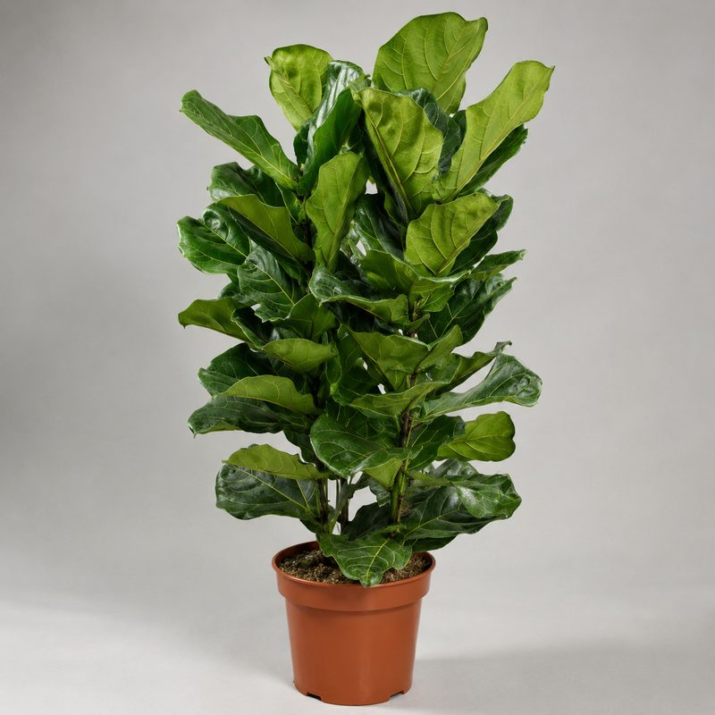
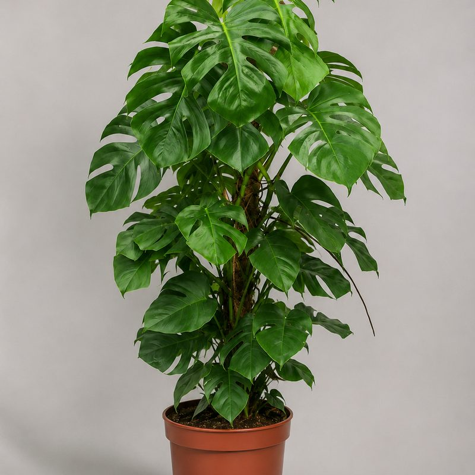
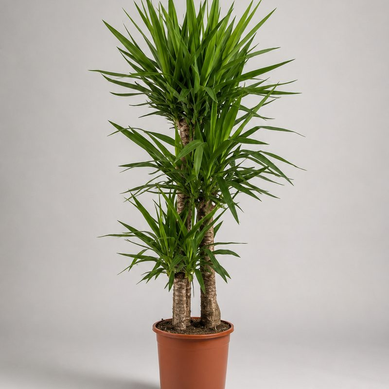
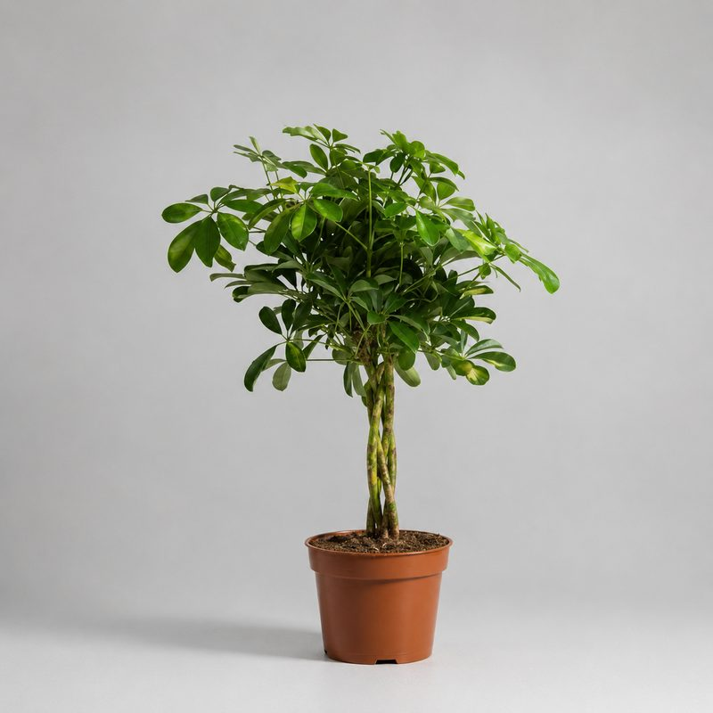
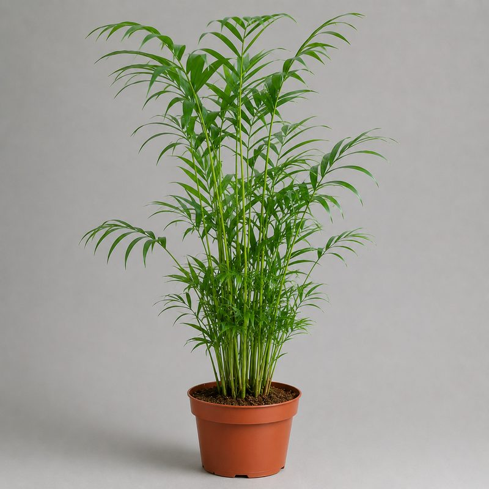
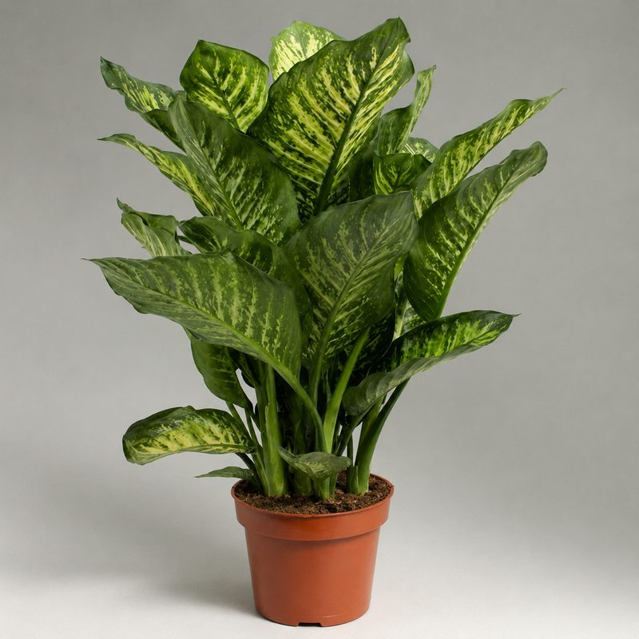

Фикус лировидный
Эффектный акцент для гостиной и офиса, до 1,5–2 м.
от 4500 сомцена-ориентир
Заказать
Подробнее об уходе →
Услуга · Бишкек
Подберём растения под освещение вашего офиса, кафе или салона, привезём, посадим в кашпо и расставим. Живые растения снижают стресс, глушат шум и делают пространство, куда приятно приходить — и сотрудникам, и клиентам.
Как это работает
1. Вы присылаете фото помещения в WhatsApp — достаточно пары кадров с окнами.
2. Мы подбираем растения под ваше освещение и бюджет: от пары акцентных крупномеров до полного озеленения зала.
3. Привозим и устанавливаем: растения уже в кашпо, с дренажом и подходящим грунтом.
4. Оставляем памятку по уходу и остаёмся на связи — если что-то пойдёт не так, подскажем, как исправить.
Работаем с офисами, кафе, салонами красоты, клиниками и коворкингами по всему Бишкеку. Для бизнеса возможна оплата по счёту.
Каталог

Эффектный акцент для гостиной и офиса, до 1,5–2 м.

Тропический характер, резные листья, быстро набирает объём.

Засухоустойчива, любит свет, отлично смотрится в кафе и холле.

Густая крона-«зонтик», хорошо переносит офисное освещение.

Мягкая зелень для интерьера, теневынослива, безопасна для дома.

Крупные пёстрые листья, быстро создаёт «джунгли» в комнате.
Не проблема: в наличии больше, чем на сайте — каталог ещё пополняется. Напишите в WhatsApp, что нужно — найдём и привезём под заказ.
Почему это работает
Крупные растения зонируют open-space без перегородок, приглушают эхо и увлажняют воздух, пересушенный кондиционерами. Для приёмной и переговорной подойдут эффектные фикус лировидный и монстера, для рабочих зон — неубиваемые замиокулькас и сансевиерия, которым хватает полива раз в неделю силами офис-менеджера. К растениям сразу подберём напольные кашпо в цвет интерьера и правильный грунт.
Частые вопросы
Зависит от площади и количества растений. Базовый вариант — от нескольких крупных растений в кашпо от 3 500 сом за позицию. Пришлите фото помещения в WhatsApp — посчитаем смету бесплатно.
Неприхотливые и теневыносливые: замиокулькас, сансевиерия, шеффлера, юкка, драцена, хамедорея. Они переносят офисное освещение, сухой воздух от кондиционера и полив раз в неделю.
Да. Привезём по Бишкеку, посадим в подходящие кашпо, расставим по помещению и оставим памятку по уходу для сотрудников.
Даём консультации по уходу в WhatsApp бесплатно. Если растение болеет — напишите нам фото, подскажем, как спасти, или подберём замену.
Пришлите фото помещения — предложим варианты озеленения под ваш бюджет в тот же день.